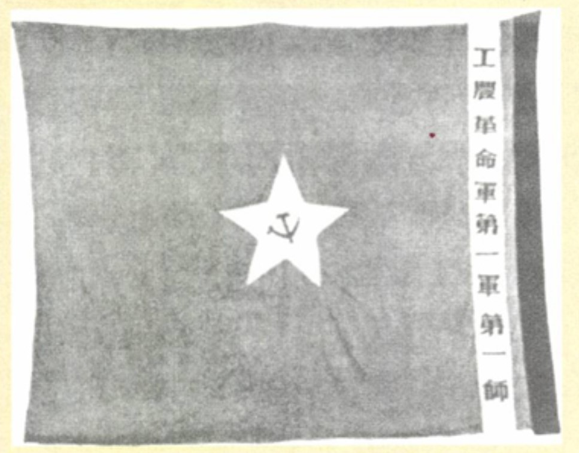
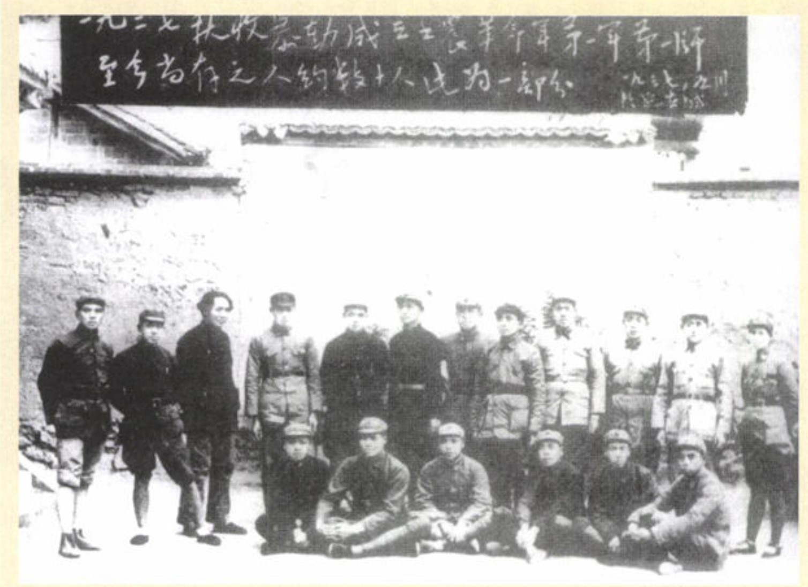
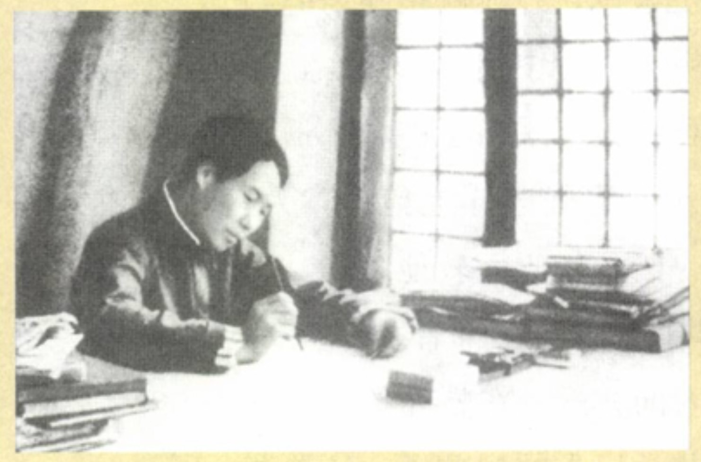
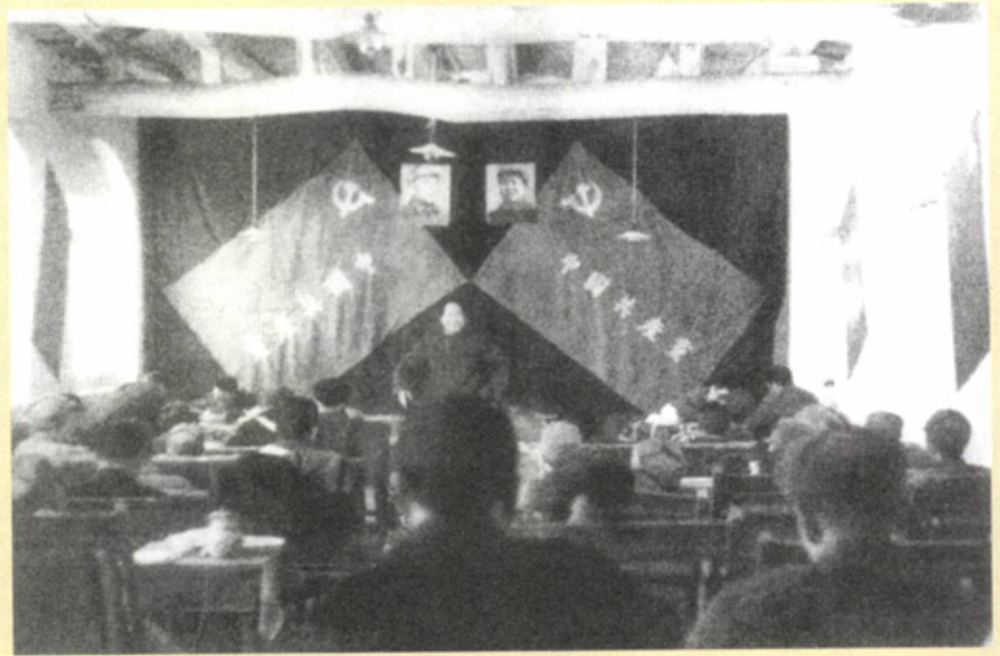
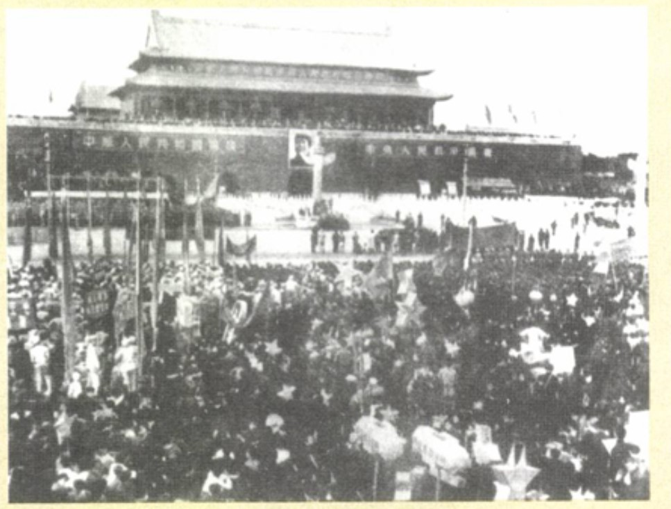
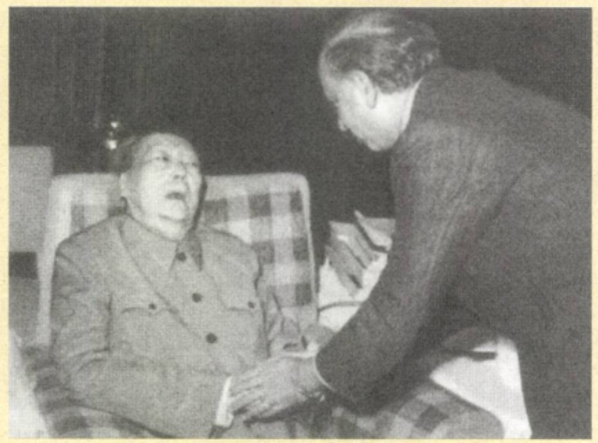

中文版序
我还称毛泽东是半知识分子。虽然思想能吸引他，但是，行动同样能诱惑他。虽然他热爱历史，并吟诗作赋，但他也希望创造历史并在中国这块画布上画出新的社会主义图案。毛泽东过高地估计了他能够改变人的本性的程度。在毛泽东的生涯中，我们能看到政治如何改变世界，但没有看到政治改变了人心。
1921-1927
1922年，毛泽东领导了一次长沙6000名建筑工人的罢工（工人们抱怨说，他们吃得起的就是每天两顿稀粥）。他穿上粗糙的衣服，假装是工人，吹着哨子指挥队伍喊口号。他还领着一群人在就餐时间冲进一名富有的承包商家里，让大家看看他桌子上的食品和工人们自己的食物之间的差别。有些车夫符合入党的条件，毛泽东就在南门附近为他们举行了一个小小的仪式。他把中共的旗帜挂在榕树上，选中的车夫一个一个走上前来，举起右手，跟着毛泽东说：“严守革命秘密，服从纪律，工作努力，永不叛党。”毛泽东的眼中闪着满意的光芒，他给每个人发了一个党证和一纸袋的学习文件。
这是对中国历史由来已久的秩序的翻转。像一个西瓜或一只猫一样在政治上不受重视的最底层的工人，现在成为一个视自己为历史火车头的政党的成员。
1924年，毛泽东领着同学沿着江岸一直走到外滩公园，看到铁栅栏上挂着一块写有公园规定的牌子，其中一条说不得摘花，另一条说狗不得入内，第三条说：“除苦力外，华人不许入内。”
毛泽东用家里的房子召开政治会议，田产的收益部分地用于共产主义事业。在韶山的乡亲们眼里，他肯定跟他父亲一样，还是个地主，尽管是个红色地主。他让旧东西服务于新事物。
毛泽东看到地主戴着高高的纸帽子，被敲着锣的人群驱赶着游街。他发现最受人痛恨的地主已经关在县监狱里。他们可恶的行为包括囤积居奇以抬高粮价，恰像毛泽东的父亲在1906年所做的那样。别的地主已经抛弃他们的财产，像狗一样逃跑了。
农民组成了梭镖队，以加强一种新秩序。孩子们迅速接受了这种新道德观。毛泽东注意到，在玩的时候，一个孩子对另一个孩子生气时会跺着脚喊：“打倒帝国主义！”他听到一个农民责备一个恶霸说：“土豪劣绅！晓得孙中山的三民主义吗？”
对毛泽东来说，重访他以前去过的工会、农会和学校时，看到的几乎都是死亡和被废弃的场景，那真是一场噩梦。
当群众运动在1925—1926年处于高潮时，中共像法官一样小心翼翼。当它于1927年中受到重创时，中共突然进发出激进的火焰。这就是20世纪中国第一次尝试社会革命时的悲剧。最后，被拿下的是毛泽东，而不是长沙。
在赶往衡阳争取矿工们加入他的部队时，毛泽东被地主武装捉住了。他被押往一个场院执行枪毙。当接近终点时，毛泽东镇定而精明。首先他向另一名俘虏借了一些钱，随后试图贿赂看押他的人放他走。这个计划显然没有奏效。离场地不足200米时，他决心逃走。他仍然精瘦得足以像闪电一样行动。他躲过了子弹，跑到池塘边的深草中藏身。 押解的部队追了过来，他们招募农民在草里搜索。毛泽东怀着一线希望静静地蜷缩着。有一两次，士兵们离他很近，他都可以伸出手去摸着他们了。有五六次他都不抱希望了，觉得他们肯定已经看见了他。
黄昏的到来救了他的命。士兵们停止搜寻去吃饭了。 整个夜晚他都在走山地，穿灌木丛。他光着脚，押解他的人把他的鞋拿走了——作为战利品。根据迷信的说法，被处死的人穿着鞋死去之后，会变成鬼找行刑者进行报复。 浑身是伤又十分疲累的毛泽东在一个他不认识的地区转来转去。最终他碰到一个农民，说服了他掩护自己。毛泽东又找到了方向。在他花钱试图贿赂之后，还剩下7元钱，因此他能吃饭并买到在那个中国革命低潮时刻他最需要的两样东西：鞋子和雨伞。

1927-1935
毛泽东带领队伍向山区走去，这是他们唯一可去的地方。他在中途多次停下来对千来名情绪低落的追随者讲话。
毛泽东似乎孤注一掷地投入大自然，好像他与他所选择要居住的峻峭山峰之间有一种秘密的、能使人活力四射的联系。毛泽东的那一小块中共机体，因其扎根于土壤，也许可以由于大自然自身的周期循环而重获生机。
如果扣扳机的人不是献身于高尚事业的志士，枪就没有用处。
毛泽东使每一个单位都变成一个政治车间。不是按照上海要求的那样成立政治部，而是建立普通士兵的委员会，士兵们通过谈论政治互相提高觉悟。不是正在进行一场针对地主集团武装部队的战役吗？委员会就会声讨地主是如何给农民的生活造成苦难的。 毛泽东坚持主张，每个班要有党小组，每个连队要有党支部，每个营都要有党的委员会。这就把遥远而抽象的党，化解为日常可见的东西，把党带到营地的篝火会上、带到每个持枪的人手中。 军官禁止打士兵。账目是公开的，每个人都可以检查。毛泽东在每次战斗之后都召集公开会议，谁都可以发言，可以对军官点名道姓地提出批评或表扬。有时军官会因为一次晚间讨论得出的意见而被降级。这样，作为教师和道德家的毛泽东创建了一种新的军事精神。
中国军队以前需要士兵的身体，从不需要士兵的心灵！
第六次代表大会选出一个极左的政治局。李立三主持工作。周恩来批评毛泽东“闯州过府、流通游击”。没人会提议缺席的毛泽东进入政治局，就像没有人提议对极糟糕的苏联食物表示感谢一样。
毛泽东坚持主张：“军事只是完成政治任务的工具之一。”
1930年，他的农田让国民党抢去了，他们为了报复还掘了他父母的坟墓。毛泽东再也收不到租，“红色绅士”再不能把他的农田当作退避之所了。毛泽东在井冈山曾没收了许多地主的土地，现在他知道被剥夺土地是什么感受了。
蒋介石在第五次“围剿”中赢的非常漂亮，他差不多确实铲除了中国的“共产主义灾难”。中共决定放弃江西。红军像波涛汹涌的大海上一条没有舵的船。8万士兵（加上几百名妇女）不知道他们正走向何处。他们许多人一定认为，他们只是在走向死亡。不少人都有心伺机叛逃。
1936-1945
在1936年已经很明显，毛泽东一心要恢复同蒋介石的统一战线，就是曾导致1927年如此苦涩逆转的那种安排！合作的对象就是曾谋杀了他第一任妻子、他兄弟、他过继的妹妹和他半数的亲密朋友的那群人！将要合作的两支军队，曾在过去的十年间像昆虫一样互相残杀！蒋介石试着要做个爱国者。不过他的政治正统性的本质，使他不像毛泽东那么讲求民族主义。他的国民党在中国占多数的农民中缺乏基础。似乎为了填补支持上的空白，国民党寻求外国的支持。最终，蒋介石完全背弃了中国老百姓，带着自怜的无奈投入到美国的怀抱中。
毛泽东于1935—1936年向少数民族和被查禁组织提出诉求的重要思想，有其精明和热爱中国的双重性质，这使他抗日民族统一战线的政策获得成功。他鼓动蒙古族人同中共携手，以“保存成吉思汗时代的荣耀”。他敦促穆斯林做同样的事，以确保“突厥人的民族复兴”。
动作敏捷的大元帅，光着脚穿着睡衣逃跑，匆忙中把假牙都丢了。他在翻墙并伤了脊背以后躲到附近的一座小山。张学良的一位军官发现他痛苦而愤怒地蜷缩在一个石缝里。 有些中共领导人想把蒋介石无限期地关在监狱里，甚至作为叛徒公开审判。毛泽东的想法不一样。他希望此时在此事上表现出宽宏大量，这将让他赢得作为爱国者压倒那位中国名义领袖的道德上的胜利。
他以政治为根据，反对那些从不希望进行防御的人：“一切正义的战争，战略防御不仅可以吸引政治上的异己分子，还可能集合一部分落后的群众加入战争。” 他的视野是深远的，但也是傲慢的：“从此以后，人类将亿万斯年看不见战争。已经开始了的革命的战争，是这个为永久和平而战的战争的一部分。” 
1945-1949
1945年8月9日，毛泽东发表声明《对日寇的最后一战》，号召八路军、新四军及其他人民军队对一切不愿投降的侵略者及其走狗进行广泛的进攻。这是八路军收复山海关。 学习美国民主的宗旨这种方式，没能起到让毛泽东在20世纪50年代和60年代非常信赖美国理想的作用。当他的“选集”出版的时候，关于40年代他对美国表现热情的叙述，大部分都被删除了。
如果毛泽东当初到了华盛顿，他或许会说服罗斯福相信他对未来的把握。这不可能阻止毛泽东和蒋介石之间的摊牌，但是中国内战就不会持续三年并且夺去300万人的生命。蒋介石也不会一直到最后都得到美国支持（实际上还不止到最后），而乔治·马歇尔也不至于在进行调停时受到掣肘。
“蒋介石是咱们的运输大队长。”毛泽东曾经开玩笑说，他说的是事实。
1949-1950
毛泽东55岁时，在1949年10月1日，他走出书斋，正式宣告中华人民共和国成立，并升起国旗。
毛泽东面对的是斯大林的傲慢态度，这个人仍然没有认识到中共胜利的重要性。“又一个铁托”，是这位苏联领导人1949年对毛泽东的诅咒语之一，“麦淇淋式的马克思主义者”是另一个诅咒语。毛泽东在受到这种压力的时刻，又一次病倒了；这似乎证明了生病的原因是焦虑，而不是俄罗斯甜菜汤和伏特加。 
1950—1956
毛泽东于1954年在政府的外在形式上作了一些改变。这些改变反映了1953年党内的紧张关系。
毛泽东在天安门城楼上谈论“革命”。革命那么长时间之后，其成功的光环曾为世界所瞩目；而现在，革命像以前从未打开的衣箱，里面所装的每一样东西都显露无遗。
1956—1957
有的时候，一年能让人感觉像是一生。在美国和欧洲很多国家，1968年就是这样的一年。对中国（以及整个共产主义集团）来说，1956年也是这样的年份。它改变了国际共产主义内部的游戏规则。自解放以来，毛泽东还从没有像非斯大林化这个又苦又甜的时期那样，必须非常小心翼翼地运用策略。
毛泽东以他说话时慢吞吞的语调，开始异常成功地让这些巨头们放松下来。“你们怎么不抽烟？”他和蔼可亲地问这一群精神紧张的人，“抽烟不一定对你们有害。丘吉尔一生抽烟，身体很健康，我所知道的唯一不抽烟而命长的人是蒋介石。”
1957-1976
当1975年的最后一分钟滴答过去时，毛泽东正默默地坐在他书房外间的沙发里。他面色蜡黄僵硬，目光呆滞，显得像德累斯顿细瓷一样脆弱，而且似乎和瓷器一样没有生命力。